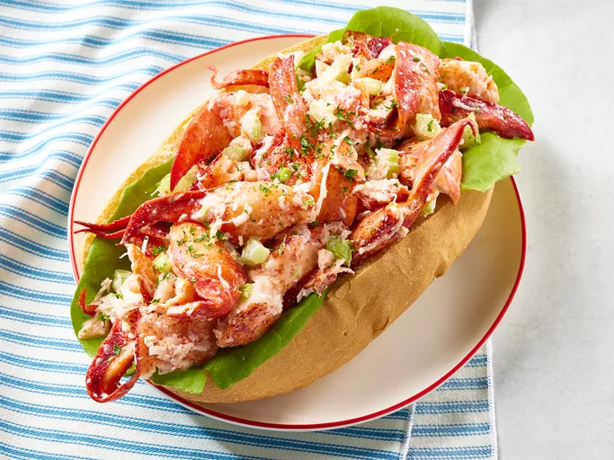

Lobster Rolls

Description
This lobster roll recipe is a wonderful summer (or winter) treat and makes a fancy lunch that will impress your friends. I grew up in Nova Scotia, where seafood was cheap. My mom and grandmothers had some pretty inventive ways of making lobster not dull. Now, lobster is a treat and costs a fortune! I've paid over $10 for a lobster roll in Cape Cod, and it wasn't half as good — or as big — as this one!
Ingredients:
- Buttered rolls: Lightly butter hot dog buns or kaiser rolls.
- Vegetables: You’ll need lettuce leaves, green onions, and celery.
- Mayonnaise: The creamy, savory sauce starts with mayonnaise.
- Lime juice: Lime juice lends brightness to the mayo-based sauce. You can substitute lemon juice if you prefer.
- Seasonings: The sauce is flavored with hot sauce, salt, and pepper. The lobster is topped with dried basil, tarragon, or parsley.
- Lobster: You’ll need 1 ½ pounds of cooked and cured lobster meat to make four lobster rolls.
Directions
- Gather all ingredients.
- Lightly butter the insides of buns and line with lettuce leaves. Set aside.
- Stir together mayonnaise, lime juice, hot pepper sauce, salt, and pepper in a medium bowl until well blended. Mix in green onions and celery.
- Gently fold in lobster until just coated.
- Stuff lobster mixture into buns. Sprinkle with basil, parsley, or tarragon.
- Enjoy!